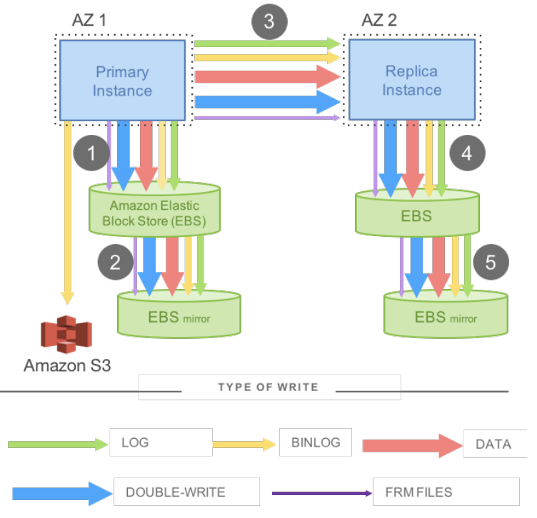

Problem
This paper introduces a novel DBMS architecture for high throuhgput OLTP workloads in the cloud. The central contribution is a clean decoupling of compute from storage, and the authors demonstrate how this can lead to increased performance over traditional DBMS like MySQL, primarily by reducing what gets sent over the network on every write.
Background
Prior to Aurora, databases had a monolithic architecture. Compute and storage were tightly coupled. If you wanted to scale up, you would need a better machine ie. more money. Replication was expensive because it required writing multiple things such as data pages, binary logs, redo logs, all of it synchronously. Crash recovery was painful because the WAL had to be replayed in full on startup, with pages materialized from scratch. The deeper problem was write amplification. A single logical write might produce a redo log, a binlog, a dirty page flush, and a double-write buffer entry. Multiplied across a replicated fleet, this becomes a significant bottleneck.

The core idea
The key idea is simple: send redo log records to storage, and nothing else. This matters because decoupling compute from storage means writes now travel over the network, not a local bus. Sending 4KB pages for every write would be too chatty. By sending only redo logs, which are small and sequential, Aurora makes the network viable as the I/O path. The storage layer then takes on the work of materializing pages continuously in the background. This has a useful side effect, as crash recovery is much faster due to pages already being kept up to date, and we don't need to reconstruct from scratch on startup. Each redo log is replicated 6 ways across 3 Availability Zones, where each AZ has 2 replicas. A write is considered durable once 4 out of the 6 replicas acknowledge it. Why does Aurora use this specific approach to data replication? A naive approach replicates data to 3 nodes with a 2/3 write quorum. This tolerates a single node failure but breaks under realistic conditions at scale. In a large fleet, some nodes are always degraded. For example, disks can fail, nodes may need to reboot and network blips can happen. This background noise is constant. If an entire AZ fails (maybe due to a fire) while even one other node is degraded, 2 out of 3 replicas are simultaneously lost. Individual node failures are randoma nd independent. AZ failures are correlated wipeouts of everything in that zone at once. A quorum design must handle both simultaneously. As such, Aurora is able to tolerate a full AZ loss and one additional failure to without losing data, and tolerate a full AZ loss without losing write availability. After a crash, you need a safe point to truncate the log. You can't cut at an arbitrary LSN as stopping mid-transaction leaves the database inconsistent. Aurora uses three layered concepts to find the right boundary. The VCL (Volume Complete LSN) is the storage layer's answer: the highest LSN below which every log record is present with no gaps. The CPL (Consistency Point LSN) is the database's answer: specific LSNs tagged as safe transaction boundaries, marking the end of each mini-transaction (MTR). The VDL (Volume Durable LSN) combines both, and it is the highest CPL at or below the VCL. Everything above VDL is truncated on recovery. For example: if storage is complete to LSN 1007 but the only CPLs are at 900, 1000, and 1100, then VDL = 1000. Records 1001 to 1007 are discarded even though the bytes exist, because they represent an incomplete mini-transaction. Traditional distributed systems use read quorums because they don't know which node has the latest data. Aurora avoids this entirely by tracking each storage node's progress via the Segment Complete LSN (SCL). On a read, we snapshot the current VDL as a read-point, find a segment whose SCL exceeds that point, and read directly from it. Page eviction follows naturally from this. Aurora never writes dirty pages to disk on eviction. Instead, a page may only be evicted once its page LSN is covered by VDL. This condition is necessary for all changes to the page to be in the durable log. A subsequent cache miss can then ask storage for the page as of VDL and receive a fully up-to-date version. Storage nodes accumulate log records over time. To know when it's safe to discard old ones, the database tracks the oldest read-point across all active reads. This minimum is called the PGMRPL (Protection Group Minimum Read Point LSN). Below the PGMRPL, no read will ever be issued. Storage nodes can therefore coalesce old log records into materialized pages and garbage collect the records themselves.
What I found interesting
The most interesting aspect is how much complexity Aurora pushes into the storage layer while leaving the database engine almost entirely unchanged. Concurrency control, transaction management, and undo logging all run like MySQL, where the engine thinks it's talking to local disk. The innovation is entirely about the I/O path. The gossip protocol between storage nodes within the same Protection Group is also very elegant. Instead of having the engine orchestrate repairs, nodes also exchange SCLs with each other and pull missing log records peer-to-peer. The storage layer heals iwtself without involving the compute layer at all. The LAL (LSN Allocation Limit) that acts as a back-pressure mechanism is also pretty interesting. By capping new LSN allocation at VDL + 10 million, the database naturally throttles incoming writes when the storage layer can't keep up.
What I found unconvincing
The paper's evaluation focuses on write throughput, which is where Aurora's architecture will win. It is unclear how Aurora performs on read-heavy workloads where the buffer cache hit rate is low and page materialization on storage becomes the bottleneck. The cost of applying log records to pages on every cache miss under high read pressure is something that the paper misses out on.
How it connects to other work
The quorum design is clearly connected to Lamport's work on distributed consensus, but Aurora deliberately avoids full consensus protocols like Paxos for the common case. By having the database track storage progress instead of having a separate consensus layer, Aurora trades generality for performance. This sets Aurora apart from systems like Spanner, which uses Paxos groups throughout.
Takeaway
Amazon's core insight is that in a cloud database, the network is the bottleneck. As such, you should only ship the log, and let storage do everything else. This single constraint is the foundation for the rest of the architecture.